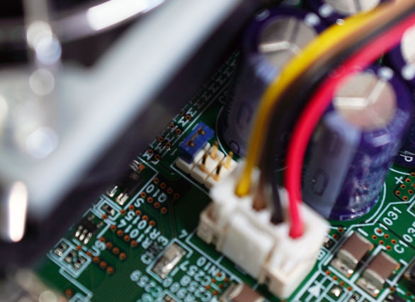

Controller
The followings are introductino of APIs in Controller class.
Force fan
AUTD3 device has a fan, and it has three fan modes: Auto, Off, and On.
In Auto mode, the temperature monitoring IC monitors the temperature of the IC, and when it exceeds a certain temperature, the fan starts automatically. In Off mode, the fan is always off, and in On mode, the fan is always on.
The fan mode is switched by the jumper switch next to the fan. As shown in the figure below, the fan side is shorted to switch to Auto, the center is Off, and the right is On.

You can force the fan to start in Auto mode by ForceFan.
use autd3::prelude::*;
fn main() -> Result<(), Box<dyn std::error::Error>> {
let mut autd = Controller::open([AUTD3::default()], autd3::link::Nop::new())?;
autd.send(ForceFan::new(|_dev| true))?;
Ok(())
}#include<chrono>
#include<autd3.hpp>
#include<autd3/link/nop.hpp>
int main() {
auto autd =
autd3::Controller::open({autd3::AUTD3{}}, autd3::link::Nop{});
autd.send(autd3::ForceFan([](const auto&) { return true; }));
return 0; }
using AUTD3Sharp;
using AUTD3Sharp.Link;
using AUTD3Sharp.Utils;
using var autd = Controller.Open([new AUTD3()], new Nop());
autd.Send(new ForceFan(_ => true));
from pyautd3 import ForceFan, Controller, AUTD3
from pyautd3.link.nop import Nop
autd = Controller.open([AUTD3()], Nop())
autd.send(ForceFan(lambda _: True))
fpga_state
Get the FPGA status.
Before using this, you need to configure reads FPGA info flag by ReadsFPGAState.
use autd3::prelude::*;
#[allow(unused_variables)]
fn main() -> Result<(), Box<dyn std::error::Error>> {
let mut autd = Controller::open([AUTD3::default()], autd3::link::Nop::new())?;
autd.send(ReadsFPGAState::new(|_dev| true))?;
let info = autd.fpga_state()?;
Ok(())
}#include<autd3.hpp>
#include<autd3/link/nop.hpp>
int main() {
auto autd =
autd3::Controller::open({autd3::AUTD3{}}, autd3::link::Nop{});
autd.send(autd3::ReadsFPGAState([](const auto&) { return true; }));
const auto info = autd.fpga_state();
return 0; }
using AUTD3Sharp;
using AUTD3Sharp.Link;
using AUTD3Sharp.Utils;
using var autd = Controller.Open([new AUTD3()], new Nop());
autd.Send(new ReadsFPGAState(_ => true));
var info = autd.FPGAState();
from pyautd3 import Controller, AUTD3, ReadsFPGAState
from pyautd3.link.nop import Nop
autd = Controller.open([AUTD3()], Nop())
autd.send(ReadsFPGAState(lambda _: True))
info = autd.fpga_state()
You can get the following information about the FPGA.
- thermal sensor for fan control is asserted or not
send
Send the data to the device.
You can send a single or two data at the same time.
Timeout
You can specify the timeout time with with_timeout.
If you omit this, the timeout time set by Link will be used.
{{#include ../../codes/Users_Manual/controller_1.rs}}{{#include ../../codes/Users_Manual/controller_1.cpp}}
{{#include ../../codes/Users_Manual/controller_1.cs}}
{{#include ../../codes/Users_Manual/controller_1.py}}
If the timeout time is greater than 0, the send function waits until the sent data is processed by the device or the specified timeout time elapses.
If it is confirmed that the sent data has been processed by the device, the send function returns true, otherwise it returns false.
If the timeout time is 0, the send function does not check whether the sent data has been processed by the device or not.
If you want to data to be sent surely, it is recommended to set this to an appropriate value.
Clear
You can clear the flags and Gain/Modulation data in the device by sending Clear data.
group
You can group the devices by using group function, and send different data to each group.
use autd3::prelude::*;
use autd3::gain::IntoBoxedGain;
use std::collections::HashMap;
fn main() -> Result<(), Box<dyn std::error::Error>> {
let mut autd = Controller::open(
[AUTD3::default(), AUTD3::default()],
autd3::link::Nop::new(),
)?;
let x = 0.;
let y = 0.;
let z = 0.;
autd.group_send(
|dev| match dev.idx() {
0 => Some("focus"),
1 => Some("null"),
_ => None,
},
HashMap::from([
(
"focus",
Focus {
pos: Point3::new(x, y, z),
option: Default::default(),
}
.into_boxed(),
),
("null", Null {}.into_boxed()),
]),
)?;
Ok(())
}#include<chrono>
#include<autd3.hpp>
#include<autd3/link/nop.hpp>
int main() {
auto autd =
autd3::Controller::open({autd3::AUTD3{}}, autd3::link::Nop{});
const auto x = 0.0;
const auto y = 0.0;
const auto z = 0.0;
autd.group_send(
[](const autd3::Device& dev) -> std::optional<const char*> {
if (dev.idx() == 0) {
return "null";
} else if (dev.idx() == 1) {
return "focus";
} else {
return std::nullopt;
}
},
std::unordered_map<const char*, std::shared_ptr<autd3::driver::Datagram>>{
{"focus",
std::make_shared<autd3::Focus>(autd3::Focus(autd3::Point3(x, y, z),
autd3::FocusOption{}))},
{"null", std::make_shared<autd3::Null>()}});
return 0; }
using AUTD3Sharp;
using AUTD3Sharp.Link;
using AUTD3Sharp.Gain;
using AUTD3Sharp.Modulation;
using AUTD3Sharp.Utils;
using var autd = Controller.Open([new AUTD3()], new Nop());
var x = 0.0f;
var y = 0.0f;
var z = 0.0f;
autd.GroupSend(dev =>
{
return dev.Idx() switch
{
0 => "null",
1 => "focus",
_ => null
};
},
new GroupDictionary {
{ "null", new Null() },
{ "focus", new Focus(pos: new Point3(x, y, z), option: new FocusOption()) }
}
);
from pyautd3 import AUTD3, Controller, Device
from pyautd3.gain import Focus, FocusOption, Null
from pyautd3.link.nop import Nop
autd = Controller.open([AUTD3()], Nop())
x = 0.0
y = 0.0
z = 0.0
def key_map(dev: Device) -> str | None:
if dev.idx == 0:
return "null"
if dev.idx == 1:
return "focus"
return None
autd.group_send(
key_map=key_map,
data_map={"null": Null(), "focus": Focus(pos=[x, y, z], option=FocusOption())},
)
Unlike gain::Group, you can use any data that can be sent with send as a value.
However, you can only group by device.
NOTE: This sample uses a string as a key, but you can use anything that can be used as a key for HashMap.